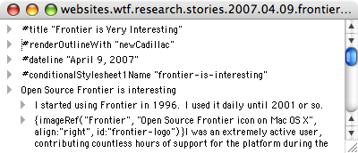

Open Source Frontier is interesting
I started using Frontier in 1996. I used it daily until 2001 or so.
I was an extremely active user, contributing countless hours of support for the platform during the Frontier 4.2 - 6.something days. I wrote the first web-based content management user interface for Frontier in 1996. It pre-dated mainResponder, the UserLand Discussion Group (discuss.root) software, Manila and Radio.
Eventually I transitioned to using WebObjects and Zope for web application development and implementing content management systems.
A couple of years ago, Frontier was open-sourced. This was a wonderful thing. Frontier is one of the platforms that most inspired me and influenced my ideas about software. HyperCard is another big inspiration. Some day I'll write about HyperCard here.
I manage this site with Frontier
When I decided to create this site, I needed to decide how I was going to manage it. I could have installed an open source CMS in my web hosting account, but I couldn't use Plone, the one I know best, and I didn't want to have to learn a new system to get started, because this site is not so about me spending time implementing web technology, it is just a platform for me to write about software ideas and maintain pages about the software I write and like. (Like Frontier)

I decided to go old-school and use Frontier, because it's pretty much the easiest thing to use that would be fun and useful. And it's appropriate, because I'm trying to go back to my roots, back to the time I was "into" software, and I was really into Frontier for much of that time.
The Inevitable
As Frontier is no longer in widespread use for site management, its HTML framework hasn't kept up with the times. I'm sure hard-core Frontier users/developers who still use it for site management have improved their own copies, but the open source version I downloaded was basically as I remembered it.
I've been modifying my copy of Frontier as I work on this site, fixing small things that annoy me and making obvious improvements to support modern HTML.
If I keep on using Frontier, it would be good to modernize Frontier's HTML framework. I don't know if I would keep doing it on my own copy of Frontier or have it part of Frontier itself. Not sure if I would try to improve the existing framework or fork it and improve that. Obviously forking sucks, but I don't think backwards compatibility would be a goal of mine, so it would probably be the only choice.
I'm not committing to anything right now, let's just say Frontier is on my radar again. Several people are working hard on the kernel, and I've always dreamed of participating there... but like everyone else that contributes, I'd want to do the things that interest me personally.
Frontier's open source kernel is a great codebase for me to learn from.
Working on Frontier's HTML framework on your own?
Let me know if you'd like to trade notes.